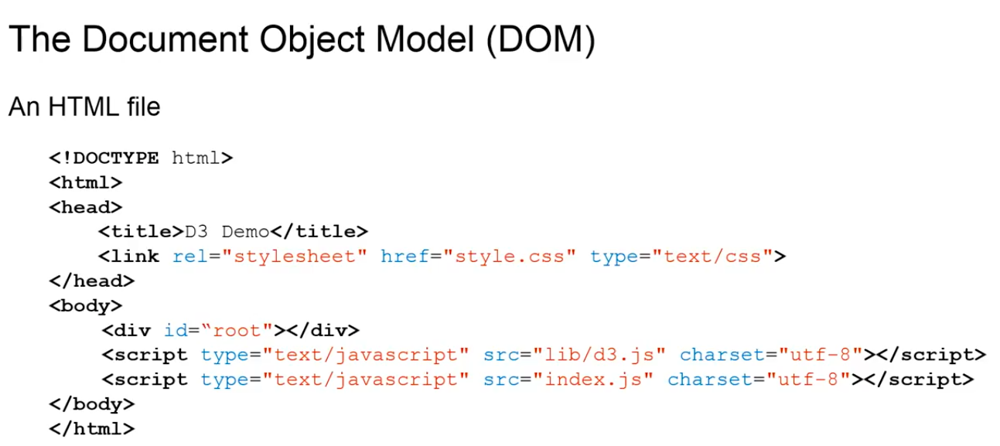
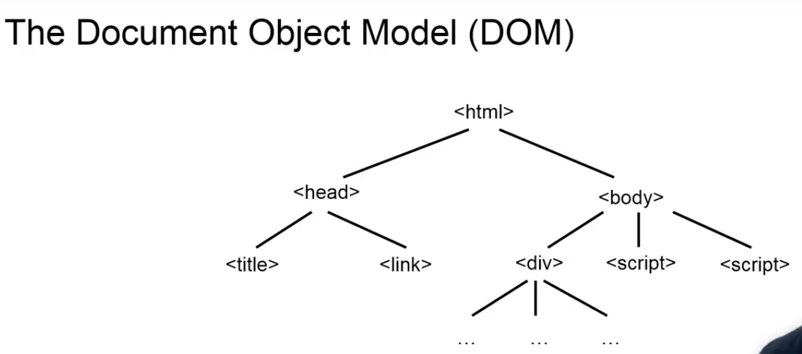
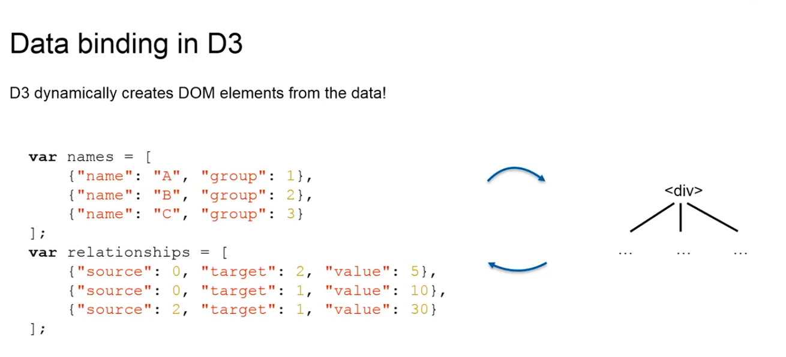
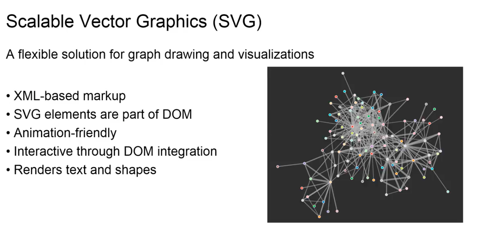
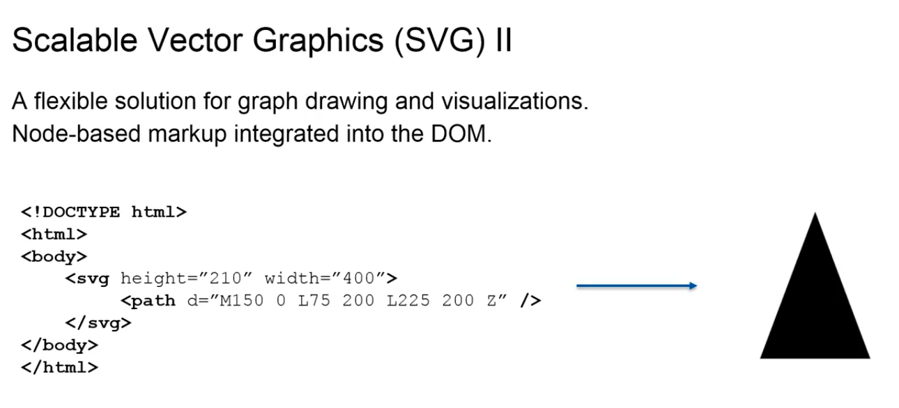
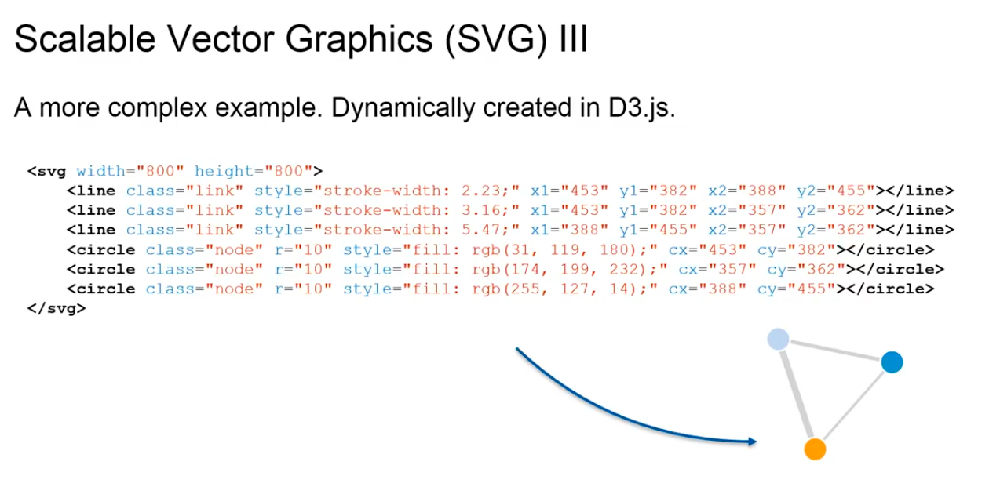

This time we're going to talk about DOM and SVG. DOM stands for the Document Object Model and to talk more about that, we have to look at the structure of an HTML file.
So, first of all, HTML stands for Hypertext Markup Language and markup languages are there to structure data. You might think of HTML as a way to tell the browser of what website looks like, but in reality its main focus is there to structure data into for example pictures or text, and only give a very rough topical structure to the file.
Now, as many markup languages, it works using tags, as you can see between pointy brackets. There are tags like, for example, html. And for each tag, there's also a corresponding closing tag, which has the same name preceded by a slash. So, you can see, on the top, it starts off with an html and on the bottom it has a closing html as well, with all the rest of the web page contained within it. For all the other tags, it works in a similar way. In the way that there's an opening tag, then there is more content and then there's a closing tag. This example here is actually the compiled version of our visualization site. We had discussed in an earlier video using the Pug template, but if you want to look at it in a different way, you could also see it like this.
The html data tag itself contains everything else in the website. On the first level, the head and body tags, which themselves also contain more data. The head contains the meta data for the website; for example, the title of the page or it links to stylesheets. And, again, HTML is there to structure the data and the linked stylesheets then decide what it actually should look like in the browser. Now to the right: the body contains the actual content of the HTML page, such as, in this case, script files and a div, like a division element, that is there to group other elements, but it could also easily be a text or an image. And, basically, what you see here is what we call a tree structure, because if you turn it on its head, the top part is also called the root and then it branches out into more and more complicated structure. You could also call it the model for all the objects that are contained in the document. So, that's why, this tree structure is what we mean when we refer to the document object model or DOM for short. And, then, when we talk about DOM manipulation, we talk about manipulating this object, for example, by changing, deleting or adding new elements to the whole structure. For example, we could add more data to this div element, which again could be pictures or text or, in our case, the SVG elements for our visualization.
So, when we talk about data binding in D3, what we actually mean by that is that D3 is able to create DOM elements or update, or delete them dynamically based on the data it has.
Again, in this example on the left right now, we have a bunch of names and a bunch of relationships, which is going back to the data we got from our novel from the "Network of Thrones" dataset. Technically, as I said before, D3 could create all sorts of DOM elements. We could create a table from this data and we could create text. But in our case we would like to have a nice looking graphics.
So, we are going to use Scalable Vector Graphics. We're going to talk about them next. What are Scalable Vector Graphics? First of all, SVG is a flexible solution for drawing on a web site and visualizations and it is also very good for graph drawing.
In contrast to a classic picture, like a JPEG or a bitmap that is a bunch of pixels, SVG is actually also a XML based markup language similar to HTML in a way. The great advantage of that is that we can add SVG elements into our HTML file and they become part of the document object model and because they then implement all the features of regular HTML elements, it becomes a very animation friendly and it becomes very interactive, because just as a button or as a link, the elements register when they get clicked on. And besides drawing shapes, you can also render text in SVG. Let's have a look at how it works.
You can see a much more simplified HTML version. At the body, we added a simple SVG element. The element itself again has a tag ID, in this case it's svg, and as a closing tag slash svg. And it also has a number of attributes. The root SVG element just has the dimensions attribute, such as the height and the width and then the child nodes of this element contain the actual shapes to draw. In this case, it's a single path element and path element our freestyle shapes, so to say, where the shape of the element is defined by the user, in this case through the d attribute. As you can see, it looks quite complex and complicated, even though the resulting shape on the right is a simple triangle. Now, obviously, if you want to create more complex animations and graphics, we would like to automate this process. And this is again where D3 comes in.
Here, you can see a more complex example on the top. You see the SVG element with six sub elements or child elements. Three of them are circles, three of them lines and you can see the result on the bottom right. It's a simple graph with three nodes and three links. Now, the color and the shape of all these objects is for one determined by the type of object, such as a line or a circle, but it is also determined by the number of attributes that can be found in these elements. And this is where we can determine most of the features of such a shape, and where D3 can greatly help us. So, in the next section of this lesson, we will take a deeper look into how data binding works in D3, and how we can use it to dynamically create these kinds of shapes and graphics.